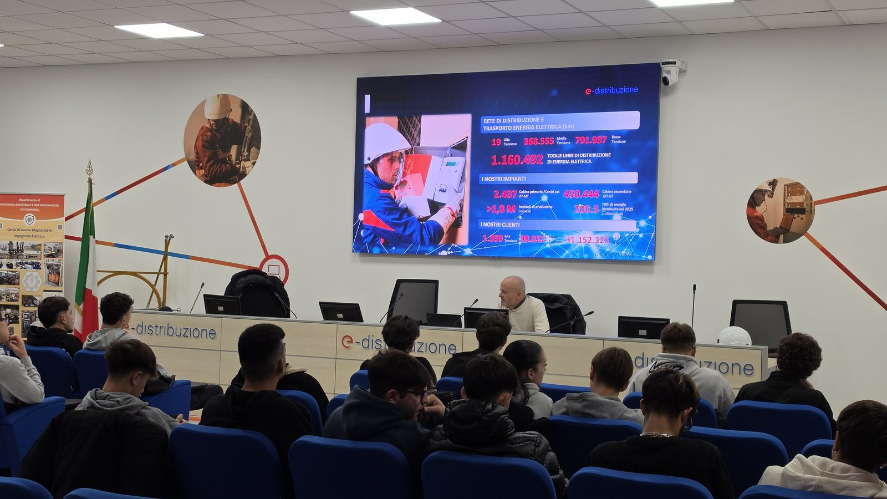
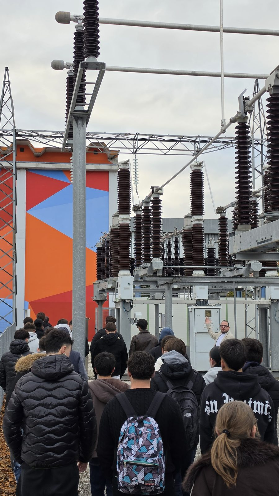
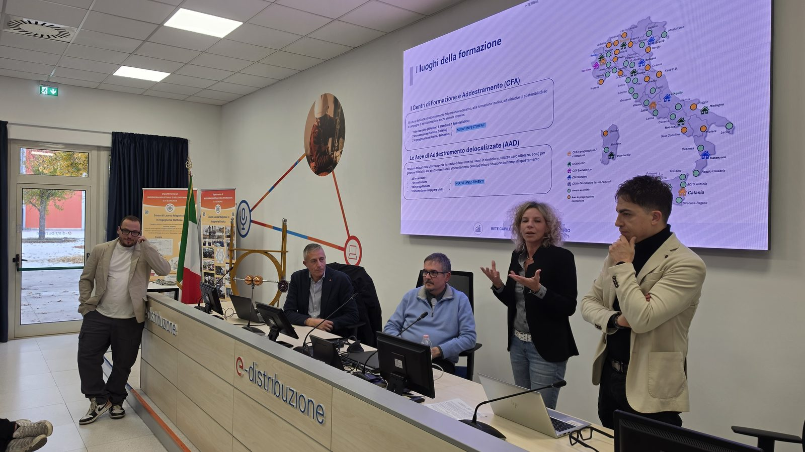
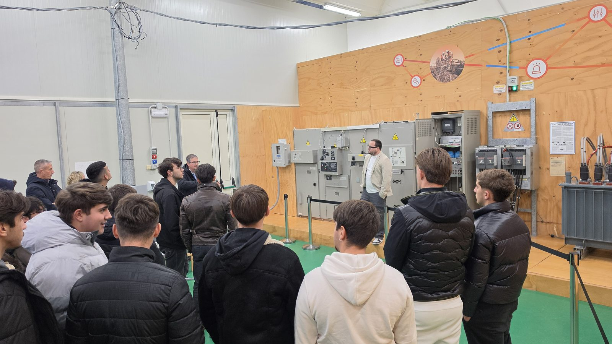

MasterClass 2026 · Quarta edizione
Il 3 novembre è partita la quarta edizione della MasterClass, il percorso formativo per gli studenti delle scuole secondarie di secondo grado che ho ideato e curo con Claudia Pagliariccio. La prima lezione si è tenuta nell'auditorium del Centro di Formazione e Addestramento (CFA) di e-distribuzione, la società del Gruppo Enel che gestisce la rete elettrica di distribuzione. Il centro dell'Aquila ospiterà tutti gli incontri di questa edizione.




La MasterClass ha sempre fatto incontrare i ragazzi con le eccellenze del territorio. Dopo tre edizioni di seminari con docenti, ricercatori e professionisti, quest'anno il percorso si dedica alle eccellenze infrastrutturali, cioè le reti e gli impianti che portano l'energia elettrica a case, servizi e imprese. Ogni lezione unisce una breve introduzione teorica all'esperienza diretta su impianti reali e simulati, nei laboratori e nelle aree addestrative del CFA.
Come in tutte le edizioni passate, il progetto è realizzato con l'IIS «Amedeo d'Aosta» dell'Aquila ed è riconosciuto agli studenti come percorso di formazione scuola-lavoro (FSL). Quest'anno lo coorganizzano l'Università degli Studi dell'Aquila, con il prof. Edoardo Fiorucci, presidente del Corso di Laurea in Ingegneria Elettrica, che coordina le attività didattiche, ed e-distribuzione, che ha aperto ai ragazzi il suo centro di formazione.
Nell'incontro «Transizione energetica e filiera formativa» gli studenti hanno conosciuto il ruolo del CFA dell'Aquila, uno dei dodici centri con cui e-distribuzione addestra in Italia il personale operativo che lavora sulla rete. Hanno visto i numeri di una rete nazionale che supera 1,16 milioni di chilometri di linee, con oltre 450 mila cabine secondarie e più di 31 milioni di clienti. Poi hanno visitato gli impianti didattici e l'area esterna con le apparecchiature in alta tensione, dove si formano i tecnici che ogni giorno mantengono in esercizio la rete.
Sei moduli, tutti al CFA dell'Aquila.
«La transizione energetica è la grande sfida industriale e civile del nostro tempo, e si vince anzitutto sul terreno delle competenze», ha dichiarato Mirko Rocci. «Dietro ogni interruttore che accendiamo opera un'architettura silenziosa di linee, cabine e professionalità che sostiene la vita del Paese. Portare i ragazzi nel cuore di questa infrastruttura significa mostrare loro, con l'evidenza dei fatti, che il futuro ha già un luogo, un linguaggio e un mestiere. Con questa quarta edizione la MasterClass resta fedele alla sua missione, offrire ai giovani aquilani il contatto diretto con l'eccellenza, e la declina nella forma più concreta, quella dell'esperienza sul campo accanto a chi ogni giorno rende possibile l'energia che diamo per scontata.»
«Orientare un giovane significa dischiudergli un orizzonte e consegnargli gli strumenti per raggiungerlo. In questa edizione scuola, università e impresa procedono nella stessa direzione, affinché i talenti che si formano all'Aquila riconoscano nella propria città un luogo in cui restare, crescere e costruire», ha sottolineato Claudia Pagliariccio.
«In questa fase storica in cui i temi della gestione delle risorse energetiche e della transizione alle tecnologie elettriche si fondono, le competenze delle risorse umane sono fondamentali», ha commentato il prof. Edoardo Fiorucci. «La sinergia tra università, scuola e azienda è la strada maestra per rappresentare ai giovani gli scenari lavorativi attuali e futuri, in un momento in cui la carenza di esperti nel settore elettrico è critica. Siamo lieti del riscontro positivo che i partecipanti ci stanno già restituendo e ringraziamo i docenti dell'IIS D'Aosta e i colleghi di e-distribuzione per la squisita collaborazione e per la grande competenza con cui affrontano con noi i temi dell'orientamento al mondo del lavoro.»
Ringrazio il prof. Edoardo Fiorucci e l'Università degli Studi dell'Aquila, e-distribuzione e tutto il personale del CFA, l'IIS «Amedeo d'Aosta» e gli studenti che hanno scelto questo percorso.